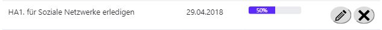

How To
TODO erstellen
TODO bearbeiten

Um ein TODO zu bearbeiten, muss man zuerst auf den Button mit dem Stift klicken. Man gelangt somit auf ein Formular, welches den gleichen Aufbau, wie das Hinzufügen von TODOS hat. Hier muss ebenfalls, wie beim TODO erstellen alle Felder ausgefüllt werden.[Siehe TODO erstellen]
TODO entfernen
Um ein TODO zu entfernen reicht es auf den Button mit dem Kreuz zu klicken.